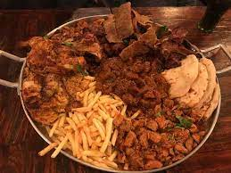

Tawagrill



Overview
Cuisine: Indian, Grill, Gluten Free Options
Price: $ - $$
Featuring a wide variety of food including naan bread, curry, fried rice and soup.
Reviews
Terry J.
9/6/2022
The food was excellent although the wait was terribly long. I had the naan bread, and my buddy had the curry. The meat was cooked the way we requested, which is pretty rare in my experience!
Julio A.
9/22/2022
My favorite place to eat in Anytown! The Super indian curry is mouth-watering!
Avery M.
9/30/2022
Everything on the menu is delicious, and the prices aren't bad. Most of the restaurants in this town with similar items charge about the same or more. My friends usually come on Friday night when the place is hopping, but it doesn't take too long to be served.